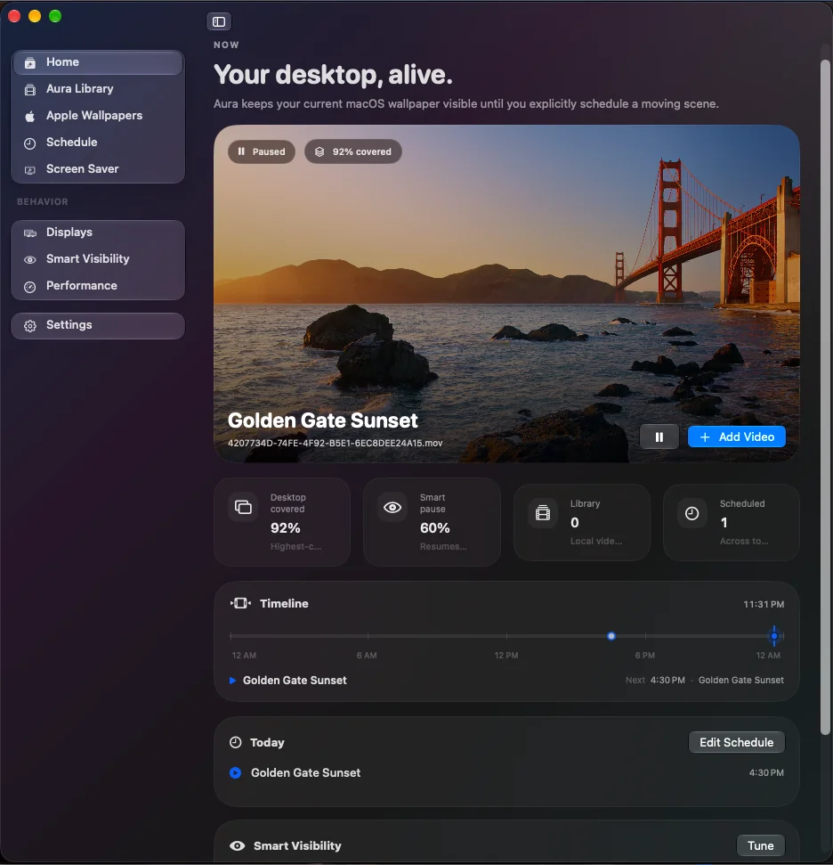

Aura for macOS
Moving wallpapers, without fighting your Mac.
Aura schedules local video wallpapers, pauses them when your desktop is covered, works with Apple wallpapers already on your Mac, and can carry the same scene into your screen saver.
Native macOS app · no account required for core wallpaper features

Schedule
Set a time. Or let the day decide.
Aura can switch scenes at normal clock times or around natural-light events such as sunrise, golden hour, sunset, and astronomical dusk. Offsets can happen before or after the event, too.
The schedule stays readable instead of turning into a pile of automation rules.
Screen Saver
The screen saver is part of Aura, not an afterthought.
Use the current Aura scene, then place a clock, date, text, or image exactly where you want it. Elements can be dragged, resized, aligned, and edited from the inspector.
The editor uses the same compact controls and materials as the rest of the app.
Smart Visibility
Motion stops when you can’t see it.
Aura watches normal window geometry to estimate how much of each desktop is covered. Once coverage reaches your pause threshold, wallpaper playback can stop and resume later.
Local by default
Your wallpaper library stays on your Mac.
Videos selected in Finder stay where they already are. Aura stores read-only access so it can reopen them later. Smart Visibility does not capture screenshots or read the contents of other apps.
Read the full privacy notes →Apple Wallpapers
Use the moving wallpapers macOS already downloaded.
Aura can browse compatible Apple wallpaper videos already stored on your Mac, build local poster images for them, and add them to your schedule without replacing or editing Apple’s files.
Standard & Pro
Use Aura free, then unlock the parts that go deeper.
The website does not handle purchases. Aura’s plan controls live inside the app.
A few details
Things people usually ask first.
Does Aura upload my videos?
No. Videos you add stay in their original location on your Mac. Aura keeps read-only file access so it can reopen them later.
Does Smart Visibility record my screen?
No. Aura uses window rectangles, layer information, and opacity to estimate desktop coverage. It does not capture window pixels or read text from other apps.
Can Aura use Apple’s moving wallpapers?
Yes, when compatible videos are already downloaded by macOS. Aura reads those local assets and does not replace or delete them.
Is Aura finished?
Aura is still being actively developed, so details can change before release. This site is meant to reflect the current app rather than promise a frozen final UI.